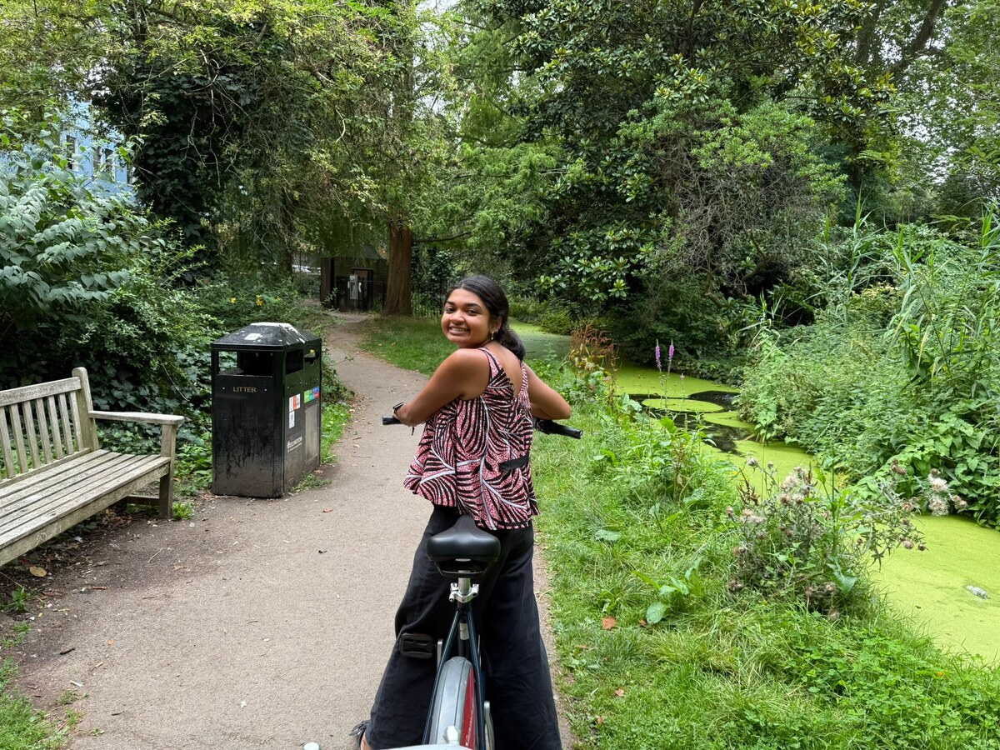
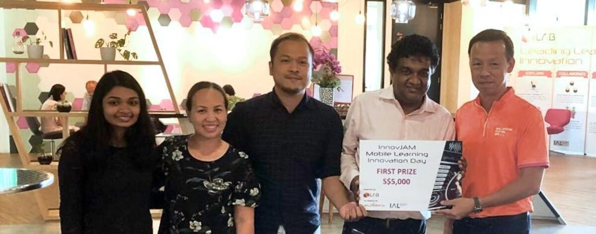
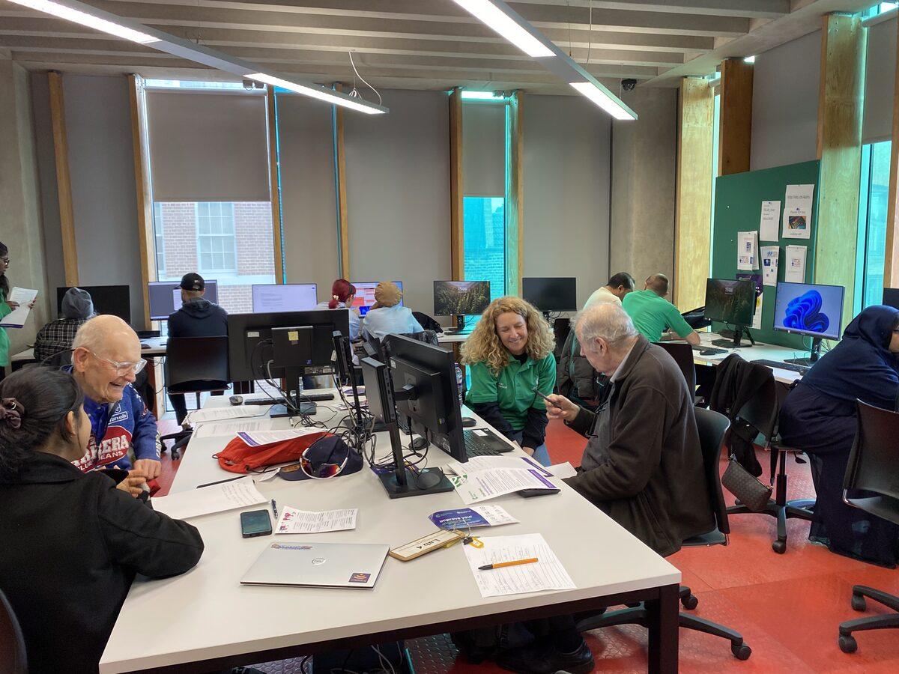
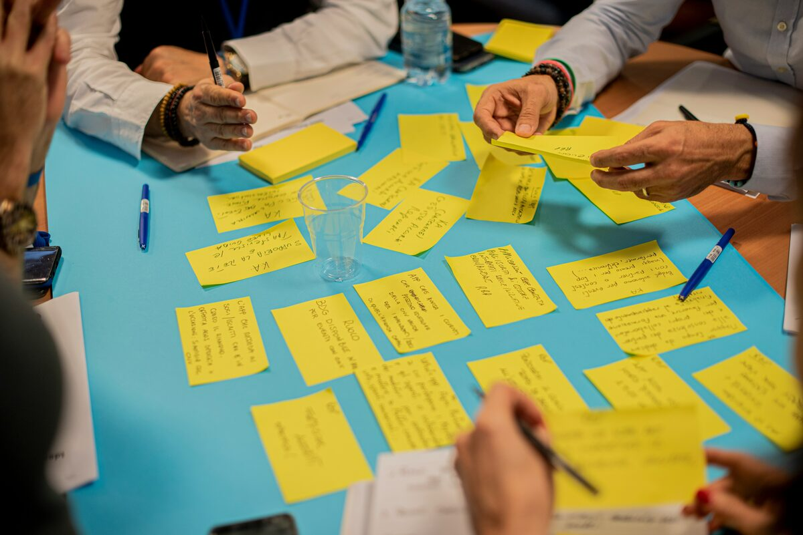
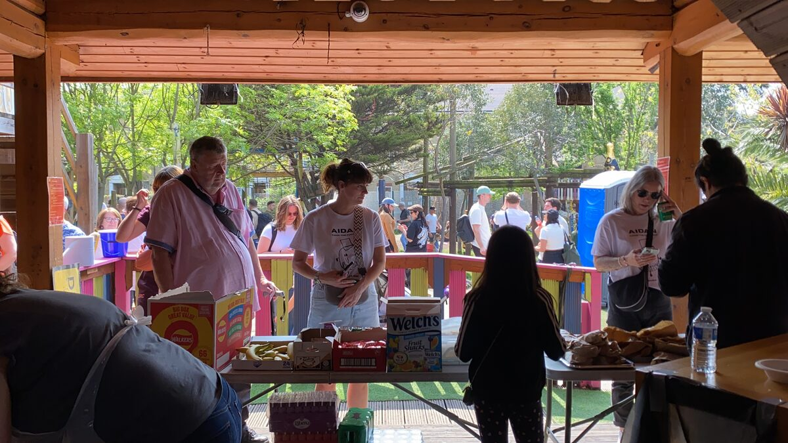
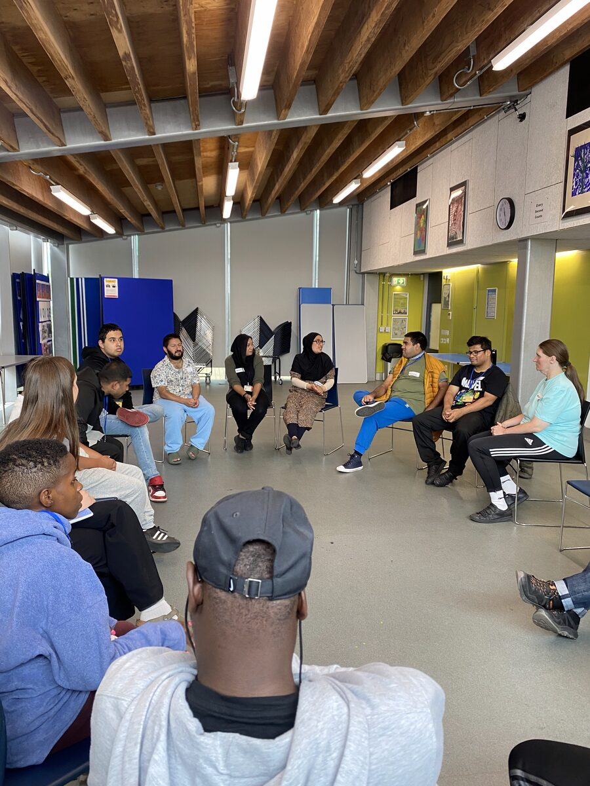
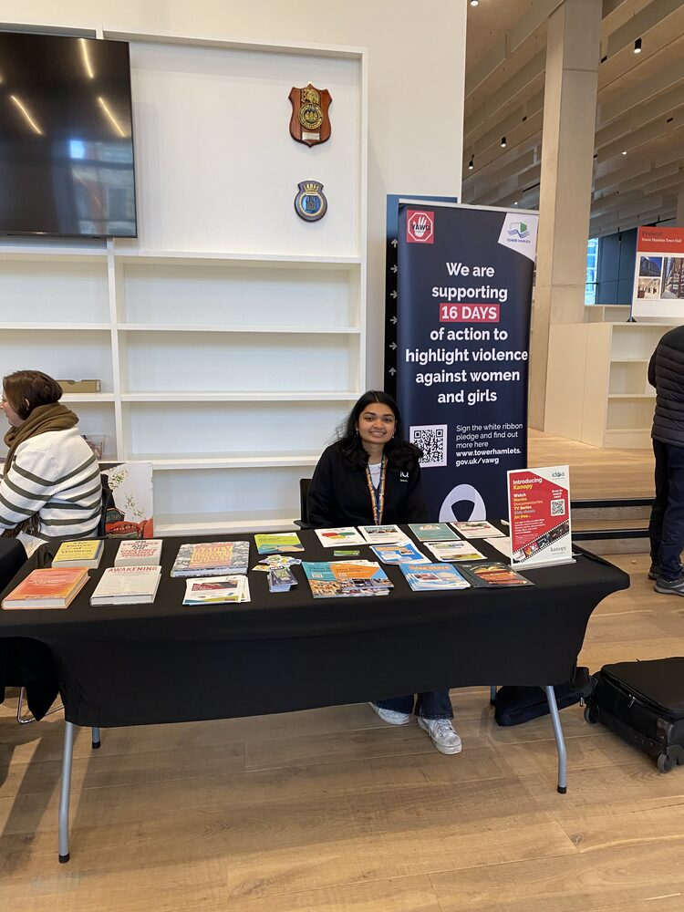
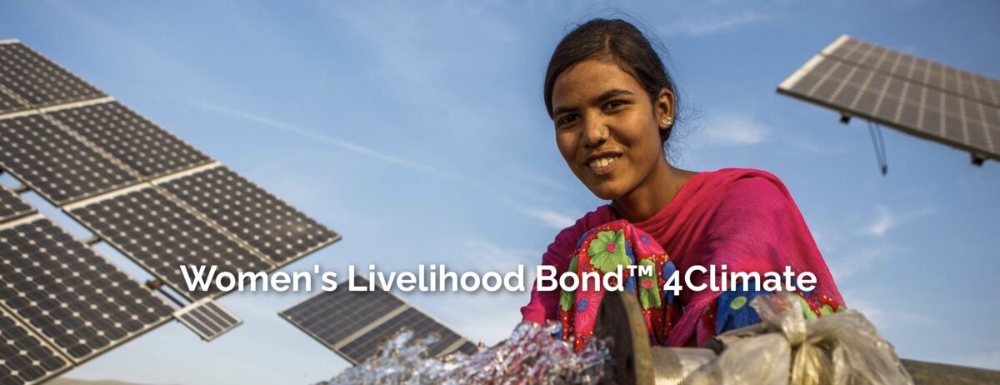
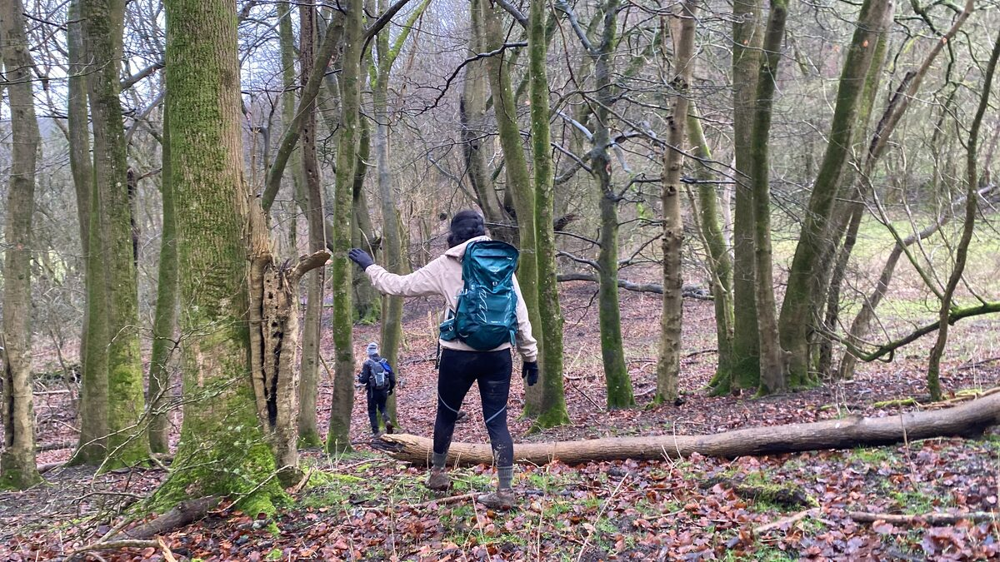
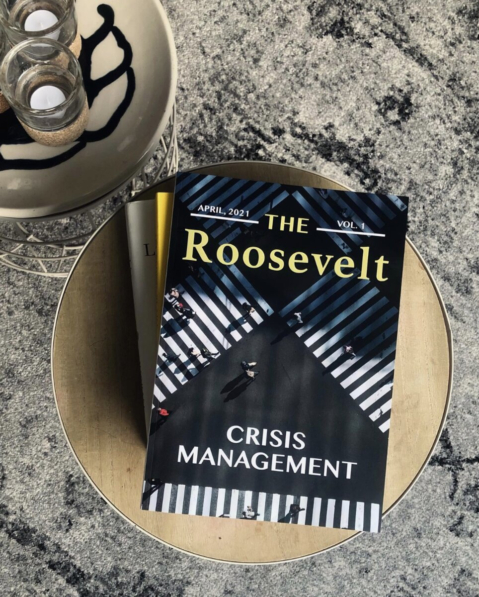

I'm a digital transformation and programme design specialist with 3+ years' experience improving how organisations operate, across SaaS, government and financial services.

I hold a BSc (Hons) in Governance, Economics and Development from Leiden University College, and a MSc (Merit) in International Social and Public Policy from the London School of Economics. Since then I've worked across technology startups, local government and sustainable finance, designing and delivering programmes that turn complicated systems- whether a new technology platform, a council service or a financial product- into something people can understand and meaningfully engage with.
In each of these roles, I've built the training, documentation and evaluation that move newly launched initiatives into widespread adoption. I've onboarded thousands of users onto new platforms, run community and digital inclusion programmes and translated complex policy and financial information for non-specialist audiences. I'm strongest at programme design and evaluation, digital transformation and building strong client relationships.
Having lived and worked across the Netherlands, the UK, India and Singapore, I bring an international perspective to how I approach people and problems.
I design programmes end to end and evaluate how well they work. Across government, non-profit and finance, I've built and evaluated high-impact programmes- including growing an online impact investment academy and piloting community programmes for adults with learning disabilities- using monitoring and evaluation to turn outcomes into evidence stakeholders can act on.
Client-facing roles in technology and financial services have given me experience acting as the link between clients, technical teams and leadership. This means operational needs and feedback consistently translate into product improvement and decision-making.
Across several roles, I've been responsible for training and onboarding people onto new systems and processes. This includes delivering a digital inclusion programme for a London local council while managing a team of 7+ volunteers.
Product and client-facing roles have given me hands-on experience driving digital adoption: redesigning interface content and workflows, and building self-service resources and documentation that make new software and processes easier to adopt. Through better onboarding, training and usability practices, my work has resulted in adoption rates increasing by nearly 70%.
My academic background gave me strong quantitative and qualitative research skills, which I've applied across policy, finance and community settings to produce stakeholder reports, concept notes, policy briefs and thought leadership.
Marketing roles across finance and social impact have given me experience writing and presenting for a wide range of audiences, from investors and policymakers to healthcare staff and residents. I have produced newsletters, videos, campaigns and end-of-year reports that increased audience engagement and made complex financial and policy information accessible to non-specialist audiences.
At AcuiZen, I trained the team building onboarding content for a new hospital client during COVID-19, helping bring 2,000+ nurses onto our SaaS platform and cutting onboarding costs by 40%.

At AcuiZen, I was part of the AcuiZen-KBA team that won First Prize at the Mobile Learning Innovation Day, hosted by iN.LAB (an initiative of SkillsFuture Singapore), for a digital training solution that improved safety standards across the maritime industry.

At the London Borough of Tower Hamlets, I designed and managed a borough-wide digital inclusion programme, sitting in on council-level discussions about how to improve service delivery for digitally excluded residents. The flagship of that work was Get Online, a weekly digital skills programme that increased in participation by 200% in 18 months.

I advised dRPC, a Nigerian NGO focused on capacity building, on how to identify and support agents of innovation. Working as part of a three-person consultancy team, we ran a full development project cycle, including problem, stakeholder and force field analysis. We finally delivered a training programme and toolkit for identifying these 'champions' within Nigeria's Public Health Administration, presenting our recommendations directly to the organisation.

As a trustee of Shadwell Community Project, a child-led adventure playground and community space in East London, I sat on the board responsible for its governance, financial oversight and strategic direction. That included scrutinising budgets, contributing to fundraising strategy, and treating safeguarding as a standing priority.

I launched an eight-week book club pilot for adults with learning disabilities at a London council library, in partnership with Books Beyond Words and Tower Project. I then wrote an independent evaluation report on the pilot, with recommendations that fed directly into the council's approach to more inclusive services.

I chaired a special committee on a borough-wide gender-based violence awareness campaign, bringing together residents, charities and council stakeholders around a shared response. I founded a women's community group to create an ongoing channel for resident engagement, and built cross-sector partnerships with organisations working with women to strengthen support for vulnerable residents.

At Impact Investment Exchange, I worked on stakeholder communications and a digital engagement campaign for the Women's Livelihood Bond™ 4 Climate, a $30 million sustainable finance instrument backed by governments and global investors. I led content production, including social media, videos, newsletters, press releases and visual assets, increasing engagement by 45%.
More on the bond is here: wlb.iixglobal.com/wlb-4.

I completed a continuous 29-hour, 100km walk from London to Brighton, raising £580 for Médecins Sans Frontières (Doctors Without Borders).
See the campaign here: gofundme.com/f/100-km-for-msf.
As part of ING's Sustainability Advisory Team, I designed and evaluated an in-app sustainability campaign for 500,000+ microbusinesses across the Benelux region, tracking engagement with sector-specific tips to shape recommendations I presented to over 40 stakeholders at ING.

I helped establish the first European chapter of the Roosevelt Institute, a liberal policy think tank. For the chapter's first publication themed 'Crisis Management', I co-authored an article analysing the effectiveness of COVID-19 lockdown measures across three countries.